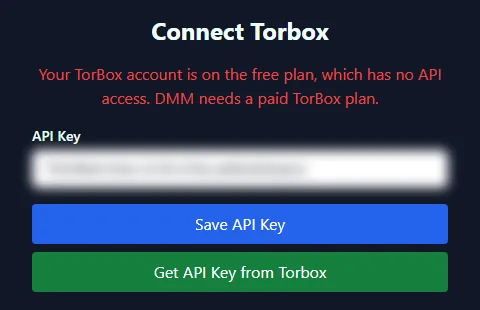
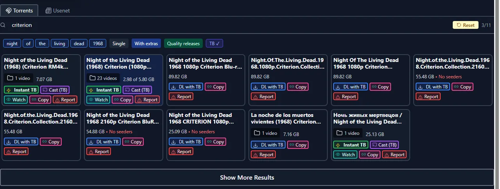
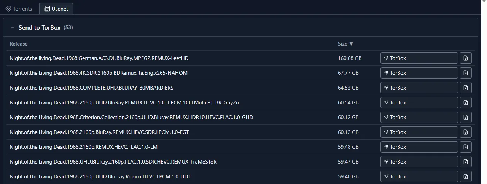

DMM 中的 TorBox
DMM 需要 TorBox 的付费套餐：Essential、Standard 或 Pro。请把你的 API key 从 torbox.app/settings 粘贴到 DMM 的 Connect Torbox 页面，然后搜索。TorBox 已经有缓存的资源会显示 Instant TB。免费套餐没有 API 访问权限，所以 DMM 无法使用它；而要把 Usenet 资源发送到 TorBox，则需要 Pro 套餐。
登录
- 在 debridmediamanager.com 上点击 Login with Torbox。如果你已经用其他服务登录过，请在首页打开 Debrid services，然后点击 Torbox Login。
- 点击 Get API Key from Torbox，它会打开 torbox.app/settings，你的 API 密钥就在那里。
- 将密钥粘贴到 API Key 中，然后点击 Save API Key。

登录后，首页会显示 Cast for TB 和 Requests，Debrid services 会列出你的 TorBox 账户并带有 ✓。点击它可以查看你的套餐以及何时到期，或者点击 Add another account 添加其他账户，或点击 Logout 退出。
各套餐能做什么
如果用免费套餐的密钥登录，DMM 会提示 Your TorBox account is on the free plan, which has no API access. DMM needs a paid TorBox plan. TorBox 官方的定价页面显示，免费套餐不包含 API 访问，Usenet 仅在 Pro 套餐中提供。
查找 TorBox 已有的内容
- 搜索一部电影或剧集并打开它。
- DMM 会向 TorBox 询问哪些版本已经缓存。这些版本会显示 Instant TB 和 Cast (TB)，并排在最前面。结果上方的 TB ✓ 标签只显示这些版本。它会在过滤框里写入
is:tb；再点一次即可显示全部。 - 点击 Instant TB，该版本会立即出现在你的 TorBox 库中。

TorBox 没有的版本会显示 DL with TB。点击后，TorBox 会先下载该版本，下载期间会占用你的一个活动槽位。大小旁边显示 No seeders，表示目前没有人分享它，可能永远无法下载完成。TorBox 总是会添加整个版本，无法只选择单个文件。
你的库
按下 Library。它会列出你的 TorBox 种子和网页下载。
- TB Add 会打开 Add to your TB library。你可以粘贴磁力链接、上传
.torrent文件，或粘贴直接下载链接，TorBox 会把这些链接作为网页下载来获取。 - Backup 会把你的列表保存到文件中。TB Restore 会把保存的列表重新添加回来。
- 其余功能与其他服务相同：请参阅 your library。
你发送到 TorBox 的 Usenet 下载不在 DMM 的库中。你可以在 TorBox 网站上找到它们，也可以在 Stremio 中的 DMM Cast 的 DMM TB Library 行里找到，或者通过 zurg 的 TorBox 托管的 Usenet 找到。
在 Stremio 中观看
在首页点击 Cast for TB，然后从那里安装插件。接着在 TorBox 已缓存的任意资源上点击 Cast (TB)。所有步骤都写在 在 Stremio 中使用 DMM 中。
在 Stremio 里，这个插件名为 DMM Cast for TorBox。它的 DMM TB Library 一行会列出你的 TorBox 种子，以及已完成的网盘和 Usenet 下载。
将 Usenet 资源发送到 TorBox（Pro）
- 打开一部电影或剧集，然后点击 Usenet 标签。
- 使用 TorBox Pro 时，列表标题为 Send to TorBox，每个版本旁边都有一个 TorBox 按钮。点击它。
- DMM 会告诉你 TorBox 对它做了什么：
- Usenet → TorBox: TorBox already had it, it is ready in your TorBox Usenet downloads.
- Usenet → TorBox: TorBox is downloading it, usually ready within a few minutes.
- Usenet → TorBox: queued, it starts when one of your TorBox active slots frees up.

也登录了 Real-Debrid？列表标题会变成 Send to Real-Debrid or TorBox，并且会同时显示两个按钮。行末的文件图标则会改为保存 NZB 文件。刚接触 Usenet？先看看 Usenet 新手入门。
TorBox 会在缓存某个 Usenet 下载 30 天后将其删除。想要再次获取的话，重新发送一次即可。
用 TorBox 补全请求
Real-Debrid 用户可以在 DMM 的求片板上请求资源。在首页点击 Requests，然后对 TorBox 已缓存的资源点击 Fulfil。资源会从你的 TorBox 发送到请求者的 Real-Debrid。每发送 10 次，可获得 7 天的 DMM 赞助者权益：参见不付费也能获得。
出现问题时
TorBox 本身是不是挂了？可以查看 Is TorBox Down Or Just Me?。还是解决不了？可以到 Discord 的 dmm-support 论坛提问。获取帮助 里写了该提供哪些信息。
常见问题
zurg 的免费版不支持 TorBox 吗？
好，说明一下。zurg 的免费公开版只支持 Real-Debrid。TorBox、其他服务和 Usenet 在 zurg 的每夜构建版中，仅供赞助者使用。由于 zurg 无法读取免费账户，你的 TorBox 方案也必须是付费的。请按照 TorBox 与 zurg 的设置指南 进行设置。
zurg 用错了 TorBox 套餐？
zurg 的 nightly 版本在 2026 年 10 月 3 日之前，会把 TorBox 的 Pro 套餐当成 Standard，并允许同时下载 5 个，而不是 10 个。请更新 zurg。其余内容请参阅 TorBox 在 zurg 中的限制。
TB 搜索没有结果？
DMM 的搜索结果不受你登录的服务影响，无论用哪个都一样。TorBox 只决定哪些资源会显示 Instant TB 标记。如果什么都没看到，可以检查 TB ✓ 标签是否已关闭，刷新页面，或者点击底部的 Show More Results。刚播出的新剧集在 DMM 上可能还没有种子资源，这时可以试试 Usenet 标签页。
可以同时使用 TorBox 和 Real-Debrid 吗？
是的。两个服务都登录后，每个资源都会显示两边的按钮。如果某个资源 TorBox 已缓存、Real-Debrid 没有，就会出现一个 TB → RD 按钮，点击后会把它从 TorBox 转到你的 Real-Debrid。
使用 DMM 需要哪个 TorBox 套餐？
任何付费套餐都可以。如果你想把 Usenet 发布内容发送到 TorBox，或者想同时下载 10 个文件，就选 Pro。